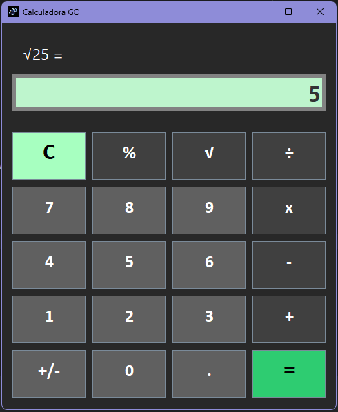

Sobre mí
Mi trayectoria
Soy un profesional que decidió empezar de cero tras varios años de experiencia en el sector logístico. Durante esa etapa aprendí que la organización,
la planificación y el control son fundamentales para el correcto desarrollo de cualquier actividad.
Con el paso del tiempo descubrí que quería orientar mi futuro profesional hacia el desarrollo de software, una disciplina en la que podía seguir aprendiendo,
afrontar nuevos retos y aplicar esa misma forma de trabajar basada en el orden, el análisis y la mejora continua.
Hoy sigo aplicando esos valores en cada uno de los proyectos que desarrollo.
Cómo trabajo
Me motiva comprender cómo funcionan las cosas, analizar los problemas antes de buscar una solución y seguir mejorando tanto a nivel técnico como en mi forma de trabajar.
En los proyectos que desarrollo procuro estructurar el código de forma ordenada, separando responsabilidades y buscando que sea limpio, legible y fácil de mantener.
Creo que un buen desarrollo no consiste únicamente en que un programa funcione, sino también en que cualquier persona pueda entenderlo, mantenerlo y ampliarlo
con facilidad.
Mi objetivo profesional
A nivel profesional no busco simplemente finalizar mis estudios. Mi objetivo es convertirme en un desarrollador de software competente, responsable y comprometido con el aprendizaje y la mejora continua.
Proyectos
Estos son algunos de los proyectos personales en los que he trabajado y que reflejan mi evolución como desarrollador de software.
Cada uno de ellos ha supuesto un nuevo reto técnico y una oportunidad para seguir mejorando mis conocimientos y mi forma de desarrollar software.

Portfolio GO
Portfolio personal desarrollado para mostrar mis proyectos, habilidades y evolución como desarrollador de software siguiendo buenas prácticas
de documentación, organización y control de versiones.
Tecnologías
Estado: En desarrollo
Ver proyecto

Calculadora GO
Aplicación de escritorio desarrollada en Java siguiendo el patrón de arquitectura MVC. El proyecto se ha utilizado para practicar organización del código,
Git, documentación y versionado.
Tecnologías
Estado: En desarrollo
Ver proyecto
Céntimo a Céntimo
Proyecto web orientado a la gestión de las finanzas personales y al ahorro, desarrollado como Trabajo de Fin de Grado y concebido como un producto con
posibilidades de crecimiento y evolución.
Tecnologías
Estado: En desarrollo
Ver proyecto